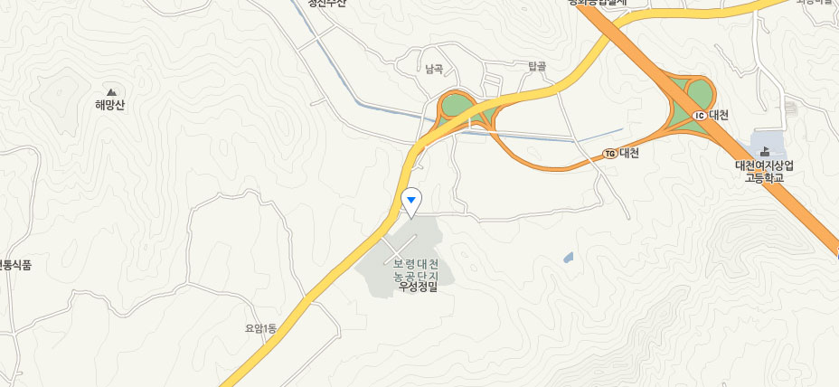

본문 바로가기
만세보령농식품직판장
이 앞장서겠습니다.
생산자 - 소비자의 협력과 상생을 통하여 얻을 수 있는 우리 먹거리를 제공할 수 있도록
만세보령농식품직판장이 앞장 서겠습니다.
오시는 길
홈
홈
만세보령 농식품 직판장
오시는 길

만세보령 농식품 직판장
네이버지도
주소 : 충청남도 대천시 대해로 415
전화 : 041-935-8595
교통편
동서울 터미널에서 오실 때
올림픽대로 → 과천봉담도시고속화도로 → 서해안고속도로 → 대천 IC (대천 톨게이트)
용인서울고속도로 → 과천봉담도시고속화도로 → 서해안고속도로 → 대천 IC 2~300m 부근
부산 출발
남해고속도로 → 통영대전고속도로 → 익산 포항 고속도로 → 서해안고속도로 → 대천 IC 2~300m 부근
여수 출발
순천완주고속도로 → 새만금북로 → 서해안고속도로 → 대천 IC 2~300m 부근
엑스포대로 → 순천완주고속도로 → 서해안고속도로 → 대천 IC 2~300m 부근
동서울 터미널에서 오실 때
100번 버스 (터미널, 신역, 신광장역 → 대천산업단지 정류장 → 만세보령 농식품 직판장까지 10m 이동)